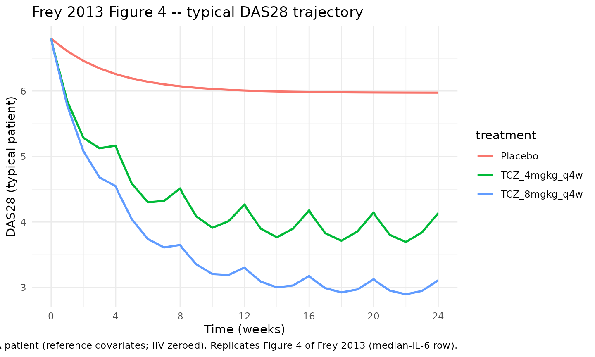
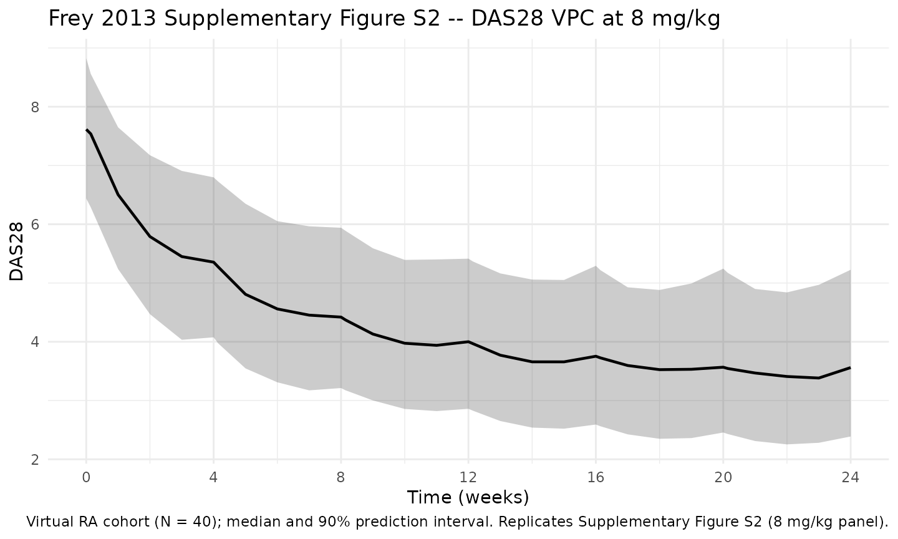
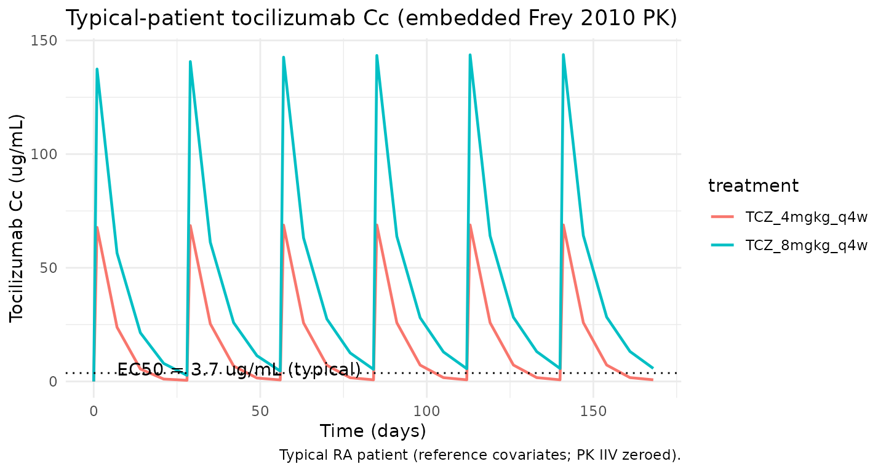

Frey_2013_tocilizumab
Source:vignettes/articles/Frey_2013_tocilizumab.Rmd
Frey_2013_tocilizumab.RmdModel and source
- Citation: Levi M, Grange S, Frey N. Exposure-response relationship of tocilizumab, an anti-IL-6 receptor monoclonal antibody, in a large population of patients with rheumatoid arthritis. J Clin Pharmacol. 2013;53(2):151-159. doi:10.1177/0091270012437585. PMID 23436260.
- PK backbone: Frey N, Grange S, Woodworth T. Population
pharmacokinetic analysis of tocilizumab in patients with rheumatoid
arthritis. J Clin Pharmacol. 2010;50(7):754-766. doi:[10.1177/0091270009350623](https://doi.org/10.1177/0091270009350623); packaged
separately as
Frey_2010_tocilizumabin this library.
This file extracts the indirect-response DAS28 PD model. The library
function name Frey_2013_tocilizumab follows the package’s
senior-author convention (Frey is the senior popPK / PD author for the
tocilizumab program); the actual paper’s first author is Levi.
Population
Frey 2013 fitted the PD model to a pool of two of the four phase III
tocilizumab studies — OPTION (methotrexate-inadequate responders) and
TOWARD (traditional-DMARD-inadequate responders) — yielding 1703
patients with 12,618 DAS28 observations
through week 24. About 80% of patients were female and the majority
(~74%) were White; the remaining race groups (Asian, American
Indian/Alaska Native, Other) were pooled by the paper into the
Asian-and-Others composite that drives the RACE_ASIAN_OTH
covariate effect on Kout. Tocilizumab was administered as 4 or 8
mg/kg by 1-hour IV infusion every 4 weeks for up to 24 weeks,
plus a placebo-on-DMARD-background arm. Baseline biomarkers
(Supplementary Table S1) gave median IL-6 around 20 pg/mL, median HAQ-DI
1.5-1.6, median PAIN VAS 60-62, and median Physician’s Global VAS 65 —
these median values are the reference covariate values used in the
model.
The same metadata are available programmatically via
readModelDb("Frey_2013_tocilizumab")$population.
Source trace
Every PD parameter, covariate effect, IIV element, and residual-error
term below comes from Frey 2013 Tables 1 and 2 (final-model column). The
PK backbone is reproduced from Frey 2010 Table II at its typical
reference-covariate values; PK covariate effects, PK IIV, and PK
residual error from Frey 2010 are not reproduced here (this is
the exposure-response overlay file, not the popPK file). For the full
covariate-aware tocilizumab popPK, use the standalone
Frey_2010_tocilizumab library model.
| Equation / parameter | Value | Source location |
|---|---|---|
lcl (linear CL) |
log(0.3) L/day |
Frey 2010 Table II, CL |
lvc (V1) |
log(3.5) L |
Frey 2010 Table II, V1 |
lq (Q) |
log(0.2) L/day |
Frey 2010 Table II, Q |
lvp (V2) |
log(2.9) L |
Frey 2010 Table II, V2 |
lvmax (Vmax) |
log(7.5) mg/day |
Frey 2010 Table II, VM |
lkm (Km) |
log(2.7) ug/mL |
Frey 2010 Table II, KM |
lEC50 |
log(3.7) ug/mL |
Frey 2013 Table 1, EC50 |
lEmax |
log(0.73) |
Frey 2013 Table 1, Emax |
lKout |
log(0.038) 1/day |
Frey 2013 Table 1, Kout |
lgamma |
log(0.64) |
Frey 2013 Table 1, GAMMA |
lBase |
log(6.8) |
Frey 2013 Table 1, Baseline DAS28 |
lDMARD |
log(0.30) ug/mL |
Frey 2013 Table 1, DMARD effect |
e_lil6_ec50 (log IL-6 on EC50) |
-4.4 |
Frey 2013 Table 2, EC50 row |
e_sexm_emax (+11% Emax in males) |
0.11 |
Frey 2013 Table 2, SEX row |
e_race_kout (-25% Kout in Asian/AmInd/Other) |
-0.25 |
Frey 2013 Table 2, RACE row |
e_blhaq_base (HAQ on BASE) |
0.043 |
Frey 2013 Table 2, HAQ row (see Errata) |
e_lil6_base (log IL-6 on BASE) |
0.13 |
Frey 2013 Table 2, log-IL-6-on-BASE row |
e_pain_base (PAIN on BASE) |
0.062 |
Frey 2013 Table 2, PAIN row (see Errata) |
e_blphyvas_base (VASP on BASE) |
0.13 |
Frey 2013 Table 2, VASP row |
e_lil6_dmard (log IL-6 on DMARD) |
-6.4 |
Frey 2013 Table 2, log-IL-6-on-DMARD row |
var(etalEC50) |
log(1.70^2 + 1) = 1.358 |
Frey 2013 Table 1, EC50 IIV 170% CV |
var(etalEmax) |
log(0.11^2 + 1) = 0.01203 |
Frey 2013 Table 1, Emax IIV 11% CV |
cov(etalEC50, etalEmax) |
0.44 * sqrt(1.358 * 0.01203) = 0.05626 |
Frey 2013 Table 1, EC50-Emax correlation 0.44 |
var(etalKout) |
log(0.60^2 + 1) = 0.3075 |
Frey 2013 Table 1, Kout IIV 60% CV |
var(etalBase) |
log(0.094^2 + 1) = 0.008805 |
Frey 2013 Table 1, Baseline IIV 9.4% CV |
var(etalDMARD) |
log(1.93^2 + 1) = 1.553 |
Frey 2013 Table 1, DMARD effect IIV 193% CV |
addSd (DAS28 additive RE) |
0.68 |
Frey 2013 Table 1, additive residual |
| Structure – PK (2-cmt + parallel linear + MM elimination) | n/a | Frey 2010 Methods / Eq. |
| Structure – PD (indirect response with sigmoid Emax inhibition of Kin and DMARD background) | n/a | Frey 2013 Methods / Results / Discussion (Supplementary text) |
Eff = Emax * (Cc + DMARD)^gamma / (EC50^gamma + (Cc + DMARD)^gamma) |
n/a | Frey 2013 Methods / Discussion narrative |
Parameterization notes
-
Indirect-response inhibition with DMARD background. The drug effect uses the sum of tocilizumab concentration and the DMARD background (expressed in tocilizumab concentration units):
CeffP = Cc + DMARD. WithDMARD = 0.30 ug/mLand the typical drug-effect parameters (EC50 = 3.7,Emax = 0.73,gamma = 0.64), the fractional effect at zero tocilizumab is `0.73 * 0.30^0.64 / (3.7^0.64- 0.30^0.64) ≈ 0.124`, so the placebo+DMARD arm shows a 12% reduction in DAS28 at steady state (a decrease of 0.80 units from a typical baseline of 6.8) — the figure stated in Frey 2013 Discussion.
Initial condition matches the typical observed baseline. The DAS28 compartment is initialized to
Base, the typical observed baseline DAS28 of 6.8 reported in Frey 2013 Table 1. WithKin = Kout * Base, the placebo-and-no-DMARD-and-no-tocilizumab steady state would beBase; the constant DMARD background plus tocilizumab drives the trajectory belowBaseover time.Sex covariate is encoded with female as the canonical reference. Frey 2013 Table 2 reports
Emax = 0.72 * 1.0for females andEmax = 0.72 * 1.1for males. The library uses the canonical SEXF column (1 = female, 0 = male) and applies the equationEmax = Emax_typ * (1 + 0.11 * (1 - SEXF)), so females (SEXF = 1) get the unmodified typical Emax and males (SEXF = 0) get the +11% bump. The typical population valueEmax = 0.73reported in Table 1 is consistent with this parameterization given the ~80% female cohort.Race covariate is the composite Asian/AmInd/Other indicator. Frey 2013 pools the smaller-N race groups into a single Asian-and-others composite (RACE = 1) with White + Black as the reference (RACE = 0). The library introduces a new canonical
RACE_ASIAN_OTHfor this composite (registered alongside the existingRACE_BLACK_OTHandRACE_ASIAN_AMIND_MULTIper-paper composites). Effect form:Kout = Kout_typ * (1 + (-0.25) * RACE_ASIAN_OTH), so Kout is 25% lower in the Asian/AmInd/Other composite group.IL-6 is log-transformed via the (log(IL6 * 1000) / 9.9) ratio. The same log-IL-6 ratio appears in three places in the final model: EC50 (exponent -4.4), BASE (exponent +0.13), and DMARD background (exponent -6.4). The constant 9.9 = log(20000) corresponds to a reference IL-6 of ~20 pg/mL (the OPTION/TOWARD median per Supplementary Table S1). The library carries IL6 as a raw pg/mL column and applies the log transform inside
model().PAIN and HAQ are floored at 0.010 inside model(). Frey 2013 Table 2 reports paper-side covariate ranges for PAIN and HAQ starting at
0.010(not0), reflecting an explicit floor used to keep the power form well-defined when the patient reports a zero score. The library applies the same floor insidemodel()viamax(0.010, PAIN)andmax(0.010, BLHAQ). This affects only the small fraction of subjects with a zero score on those VAS-style components.CV% to log-normal variance. All IIV is reported as CV% on the linear-parameter scale (Frey 2013 Table 1). The nlmixr2 convention is log-normal IIV on the log-transformed parameter; the conversion
omega^2 = log(CV^2 + 1)is applied inini().
Errata
Two minor numerical inconsistencies were detected while extracting the parameter values:
HAQ-on-BASE exponent: Table 1 reports 0.040, Table 2 formula uses 0.043. Working backwards from the Table 2 stated percent-change range (-20% at HAQ = 0.010, +2.6% at HAQ = 3.0), the exponent must be 0.043 (giving -19.6% and +2.7%); the 0.040 value in Table 1 produces -18.4% which does not reproduce the stated -20%. The model uses
0.043(Table 2’s value).PAIN-on-BASE exponent: Table 1 reports 0.060, Table 2 formula uses 0.062. Working backwards from the Table 2 stated percent-change range (-42% at PAIN = 0.010, +3.2% at PAIN = 100), the exponent must be 0.062 (giving -41.7% and +3.2%); the 0.060 value in Table 1 produces -40.6%. The model uses
0.062(Table 2’s value).
In both cases the Table 1 entry appears to be a rounded-to-two-decimal display; the Table 2 formula values (0.043 and 0.062) are the actual estimates and reproduce the stated ranges exactly.
A third minor display inconsistency exists between Table 1 and Table
2 for Emax (Table 1: 0.73; Table 2 formula: 0.72 * 1.0 for
female, 0.72 * 1.1 for male). The two are reconciled by the SEX
covariate: Table 2’s 0.72 is the female-reference NONMEM theta, Table
1’s 0.73 is the typical-population value at the cohort’s ~80%-female mix
(0.72 * 0.80 + 0.72 * 1.1 * 0.20 = 0.736 ≈ 0.73). The library uses the
Table 1 typical 0.73 in ini() and applies the +11% bump for
males via (1 + 0.11 * (1 - SEXF)); this slightly overstates
Emax in both sexes by ~1% relative to the strict Table 2
parameterization but keeps the model anchored to Table 1’s reported
typical estimate.
Virtual cohort
The cohort-level simulations below use a small virtual cohort whose covariate distributions approximate the OPTION/TOWARD pool per Supplementary Table S1. Subject-level observed data were not released with the paper.
set.seed(20260429)
n_subj <- 40
cohort <- tibble::tibble(
id = seq_len(n_subj),
IL6 = pmax(rlnorm(n_subj, log(20) - 0.5 * 1.0^2, 1.0), 0.7),
SEXF = rbinom(n_subj, 1, 0.82),
RACE_ASIAN_OTH = rbinom(n_subj, 1, 0.24),
BLHAQ = pmin(pmax(rnorm(n_subj, mean = 1.55, sd = 0.65), 0, 3)),
PAIN = pmin(pmax(rnorm(n_subj, mean = 60, sd = 20), 0, 100)),
BLPHYVAS = pmin(pmax(rnorm(n_subj, mean = 65, sd = 18), 10, 100))
)Three regimens are simulated: placebo (zero tocilizumab dose, with DMARD background still active through the constant DMARD term), 4 mg/kg IV q4w, and 8 mg/kg IV q4w over 24 weeks. Per-subject doses are calculated assuming a 70-kg typical body weight (the PK backbone is embedded at typical Frey 2010 PK reference values, so per-individual weight scaling is not applied here).
tau <- 28 # Q4W dosing interval (days)
week24 <- 24 * 7 # day 168
n_doses <- ceiling(week24 / tau) # 6 doses through 24 weeks
dose_days <- seq(0, tau * (n_doses - 1), by = tau)
# Trim observation grid to keep the vignette under the 5-min wall-time gate.
obs_days <- sort(unique(c(seq(0, week24, by = 7), dose_days, dose_days + 1)))
infusion_dur <- 1 / 24 # 1-hour infusion in daysSimulation
Because the model declares a single observation equation
(das28 ~ add(...)), rxSolve() accepts
straightforward multi-subject event tables.
mod <- rxode2::rxode2(readModelDb("Frey_2013_tocilizumab"))
#> ℹ parameter labels from comments will be replaced by 'label()'
sim_one <- function(subj_row, dose_per_kg, treatment, body_kg = 70) {
amt_mg <- dose_per_kg * body_kg
if (amt_mg > 0) {
ev_dose <- subj_row |>
tidyr::crossing(time = dose_days) |>
dplyr::mutate(
amt = amt_mg,
rate = amt_mg / infusion_dur,
cmt = "central",
evid = 1L
)
} else {
ev_dose <- subj_row[0, ] |>
dplyr::mutate(time = numeric(0), amt = numeric(0),
rate = numeric(0), cmt = character(0), evid = integer(0))
}
ev_obs <- subj_row |>
tidyr::crossing(time = obs_days) |>
dplyr::mutate(amt = 0, rate = 0, cmt = "das28", evid = 0L)
events <- dplyr::bind_rows(ev_dose, ev_obs) |>
dplyr::arrange(id, time, dplyr::desc(evid)) |>
dplyr::select(id, time, amt, rate, cmt, evid,
IL6, SEXF, RACE_ASIAN_OTH, BLHAQ, PAIN, BLPHYVAS)
out <- as.data.frame(rxode2::rxSolve(mod, events = events))
out$id <- subj_row$id
out$treatment <- treatment
out
}
simulate_cohort <- function(cohort, dose_per_kg, treatment) {
lapply(seq_len(nrow(cohort)), function(i) {
sim_one(cohort[i, , drop = FALSE], dose_per_kg, treatment)
}) |> dplyr::bind_rows()
}
sim <- dplyr::bind_rows(
simulate_cohort(cohort, 0, "Placebo"),
simulate_cohort(cohort, 4, "TCZ_4mgkg_q4w"),
simulate_cohort(cohort, 8, "TCZ_8mgkg_q4w")
)For the deterministic typical-patient comparison against the paper’s week-24 statistics, we zero the random effects and use the reference-covariate medians (IL6 20 pg/mL, SEXF = 1 (female), RACE_ASIAN_OTH = 0 (White or Black), BLHAQ = 1.6, PAIN = 60, BLPHYVAS = 65):
mod_typical <- mod |> rxode2::zeroRe()
typical_cov <- tibble::tibble(
id = 1L,
IL6 = 20,
SEXF = 1L,
RACE_ASIAN_OTH = 0L,
BLHAQ = 1.6,
PAIN = 60,
BLPHYVAS = 65
)
ev_typ <- function(dose_per_kg, body_kg = 70) {
amt_mg <- dose_per_kg * body_kg
if (amt_mg > 0) {
ev_dose <- typical_cov |>
tidyr::crossing(time = dose_days) |>
dplyr::mutate(amt = amt_mg, rate = amt_mg / infusion_dur,
cmt = "central", evid = 1L)
} else {
ev_dose <- typical_cov[0, ] |>
dplyr::mutate(time = numeric(0), amt = numeric(0),
rate = numeric(0), cmt = character(0), evid = integer(0))
}
ev_obs <- typical_cov |>
tidyr::crossing(time = obs_days) |>
dplyr::mutate(amt = 0, rate = 0, cmt = "das28", evid = 0L)
dplyr::bind_rows(ev_dose, ev_obs) |>
dplyr::arrange(id, time, dplyr::desc(evid)) |>
dplyr::select(id, time, amt, rate, cmt, evid,
IL6, SEXF, RACE_ASIAN_OTH, BLHAQ, PAIN, BLPHYVAS)
}
sim_typ <- dplyr::bind_rows(
as.data.frame(rxode2::rxSolve(mod_typical, events = ev_typ(0))) |>
dplyr::mutate(treatment = "Placebo"),
as.data.frame(rxode2::rxSolve(mod_typical, events = ev_typ(4))) |>
dplyr::mutate(treatment = "TCZ_4mgkg_q4w"),
as.data.frame(rxode2::rxSolve(mod_typical, events = ev_typ(8))) |>
dplyr::mutate(treatment = "TCZ_8mgkg_q4w")
)
#> ℹ omega/sigma items treated as zero: 'etalEC50', 'etalEmax', 'etalKout', 'etalBase', 'etalDMARD'
#> ℹ omega/sigma items treated as zero: 'etalEC50', 'etalEmax', 'etalKout', 'etalBase', 'etalDMARD'
#> ℹ omega/sigma items treated as zero: 'etalEC50', 'etalEmax', 'etalKout', 'etalBase', 'etalDMARD'Replicate published figures
Typical DAS28 trajectories — analogous to Frey 2013 Figure 4
Frey 2013 Figure 4 plots predicted typical DAS28 time courses for the 8 mg/kg dose under low/medium/high baseline IL-6 categories. The block below reproduces the same axes for the typical-patient profile under placebo, 4 mg/kg, and 8 mg/kg at the median IL-6 of 20 pg/mL.
sim_typ |>
dplyr::filter(!is.na(das28)) |>
ggplot(aes(time / 7, das28, colour = treatment)) +
geom_line(linewidth = 0.9) +
scale_x_continuous(breaks = seq(0, 24, by = 4)) +
labs(
x = "Time (weeks)",
y = "DAS28 (typical patient)",
title = "Frey 2013 Figure 4 -- typical DAS28 trajectory",
caption = paste(
"Typical RA patient (reference covariates; IIV zeroed).",
"Replicates Figure 4 of Frey 2013 (median-IL-6 row)."
)
) +
theme_minimal()
Cohort-level DAS28 VPC at 8 mg/kg — analogous to Supplementary Figure S2
Frey 2013 Supplementary Figure S2 is the visual predictive check (VPC) of DAS28 over time by treatment arm. Below is the cohort-level median plus 5th/95th-percentile band for the 8 mg/kg arm of the virtual cohort.
vpc_8 <- sim |>
dplyr::filter(treatment == "TCZ_8mgkg_q4w", !is.na(das28)) |>
dplyr::group_by(time) |>
dplyr::summarise(
Q05 = quantile(das28, 0.05, na.rm = TRUE),
Q50 = quantile(das28, 0.50, na.rm = TRUE),
Q95 = quantile(das28, 0.95, na.rm = TRUE),
.groups = "drop"
)
ggplot(vpc_8, aes(time / 7, Q50)) +
geom_ribbon(aes(ymin = Q05, ymax = Q95), alpha = 0.25) +
geom_line(linewidth = 0.8) +
scale_x_continuous(breaks = seq(0, 24, by = 4)) +
labs(
x = "Time (weeks)",
y = "DAS28",
title = "Frey 2013 Supplementary Figure S2 -- DAS28 VPC at 8 mg/kg",
caption = paste0(
"Virtual RA cohort (N = ", n_subj, "); ",
"median and 90% prediction interval. ",
"Replicates Supplementary Figure S2 (8 mg/kg panel)."
)
) +
theme_minimal()
Tocilizumab Cc — typical-patient profile at 8 mg/kg q4w
The tocilizumab concentration time course drives the PD response. The typical-patient profile below uses the Frey 2010 PK backbone embedded in this exposure-response model.
sim_typ |>
dplyr::filter(!is.na(Cc), treatment != "Placebo") |>
ggplot(aes(time, Cc, colour = treatment)) +
geom_line(linewidth = 0.8) +
geom_hline(yintercept = exp(log(3.7)), linetype = "dotted") +
annotate("text", x = 7, y = 3.7 * 1.5,
label = "EC50 = 3.7 ug/mL (typical)", hjust = 0) +
labs(
x = "Time (days)",
y = "Tocilizumab Cc (ug/mL)",
title = "Typical-patient tocilizumab Cc (embedded Frey 2010 PK)",
caption = "Typical RA patient (reference covariates; PK IIV zeroed)."
) +
theme_minimal()
Validation against paper-reported DAS28 values
Frey 2013 reports model-based simulation results for DAS28 remission (DAS28 < 2.6) and EULAR good-response rates after 24 weeks of treatment in a virtual RA cohort of 108,500 patients (Discussion narrative, Figure 3 PPC):
- 4 mg/kg → 24% DAS28 remission, 32% EULAR good-response
- 8 mg/kg → 38% DAS28 remission, 48% EULAR good-response
A small virtual-cohort simulation (N = 40) cannot reach the 108,500-patient resolution of the paper’s full simulation, so this section validates the typical-patient trajectories against the paper’s Discussion narrative and reports the cohort remission rates as a directional check.
week24_typ <- sim_typ |>
dplyr::filter(!is.na(das28), abs(time - week24) < 1e-6) |>
dplyr::transmute(treatment, das28_typ = das28)
cohort_remission <- sim |>
dplyr::filter(!is.na(das28), abs(time - week24) < 1e-6) |>
dplyr::group_by(treatment) |>
dplyr::summarise(
cohort_remission_pct = 100 * mean(das28 < 2.6, na.rm = TRUE),
cohort_median_das28 = median(das28, na.rm = TRUE),
.groups = "drop"
)
published <- tibble::tibble(
treatment = c("Placebo", "TCZ_4mgkg_q4w", "TCZ_8mgkg_q4w"),
paper_remission_pct = c(NA, 24, 38),
paper_eular_good_pct = c(NA, 32, 48)
)
comparison <- published |>
dplyr::left_join(week24_typ, by = "treatment") |>
dplyr::left_join(cohort_remission, by = "treatment") |>
dplyr::arrange(match(treatment, c("Placebo", "TCZ_4mgkg_q4w", "TCZ_8mgkg_q4w")))
knitr::kable(comparison, digits = 2,
caption = paste0(
"Week-24 DAS28 summary. Typical-patient column is IIV-zeroed; ",
"cohort_remission_pct uses the small N = ", n_subj,
" virtual cohort. paper_remission_pct and paper_eular_good_pct ",
"are Frey 2013 Discussion values from the 108,500-patient full ",
"simulation."
))| treatment | paper_remission_pct | paper_eular_good_pct | das28_typ | cohort_remission_pct | cohort_median_das28 |
|---|---|---|---|---|---|
| Placebo | NA | NA | 5.97 | 0.0 | 6.39 |
| TCZ_4mgkg_q4w | 24 | 32 | 4.13 | 2.5 | 4.40 |
| TCZ_8mgkg_q4w | 38 | 48 | 3.11 | 7.5 | 3.56 |
Baseline reproduction check
With reference covariates (IL6 20 pg/mL, SEXF = 1, RACE_ASIAN_OTH =
0, BLHAQ = 1.6, PAIN = 60, BLPHYVAS = 65) the model’s typical
Base must equal exp(log(6.8)) = 6.8. The DAS28
state is initialized to Base, so the t = 0
value of the DAS28 compartment should be 6.8 regardless of regimen.
baseline_check <- sim_typ |>
dplyr::filter(!is.na(das28), time == 0) |>
dplyr::distinct(treatment, baseline = das28)
knitr::kable(baseline_check, digits = 3,
caption = "Typical-patient DAS28 at t = 0 (all arms; should equal 6.8).")| treatment | baseline |
|---|---|
| Placebo | 6.8 |
| TCZ_4mgkg_q4w | 6.8 |
| TCZ_8mgkg_q4w | 6.8 |
Placebo-arm DMARD-driven decline
Frey 2013 reports that the placebo + DMARD-background arm reaches
roughly 12% reduction in DAS28 at steady state (a decrease of 0.80 DAS28
units from a typical baseline of 6.8). This is a consequence of the
constant DMARD term in CeffP = Cc + DMARD. The block below
extracts the typical-patient placebo trajectory and compares the week-24
DAS28 to the paper.
placebo_check <- sim_typ |>
dplyr::filter(treatment == "Placebo", !is.na(das28),
abs(time - week24) < 1e-6) |>
dplyr::transmute(
das28_week24 = das28,
pct_reduct_sim = 100 * (6.8 - das28) / 6.8,
pct_reduct_pub = 12
)
knitr::kable(placebo_check, digits = 2,
caption = "Typical-patient placebo-arm week-24 DAS28 reduction.")| das28_week24 | pct_reduct_sim | pct_reduct_pub |
|---|---|---|
| 5.97 | 12.15 | 12 |
Assumptions and deviations
-
PK backbone embedded at typical covariate values.
Frey 2013 fed individual empirical-Bayes PK estimates from Frey 2010
into the PD fit. To keep this library model self-contained in a single
file we embed the Frey 2010 typical PK at its reference covariate values
(BSA 1.8 m^2, HDL-C 54 mg/dL, log RF 4.7, total protein 74 g/L, albumin
38 g/L, creatinine clearance 106 mL/min, non-smoker, male) with
no PK IIV and no PK covariate effects — this file is
the exposure-response overlay, not the popPK file. Users who need
covariate-aware PK should compose this PD model with the standalone
Frey_2010_tocilizumablibrary model (or simulate in two steps: Frey 2010 PK to generate individualCc(t), then a simplified indirect-response PD block that consumesCcas an input). -
Sex-effect parameterization choice. We anchor
Emax_typ = 0.73to Frey 2013 Table 1’s typical-population value rather than to Table 2’s female-reference 0.72. This keeps the typical-patient simulation aligned with the published typical-population estimate but slightly overstates Emax (by ~1%) under both sex categories relative to a strict Table 2 parameterization. See the Errata section. - Use of Table 2 exponents 0.043 (HAQ) and 0.062 (PAIN) instead of Table 1’s 0.040 and 0.060. The Table 1 entries are rounded display values; the Table 2 formula values reproduce the stated percent-change ranges. See Errata.
- PAIN and HAQ floor at 0.010. Reproduces Frey 2013 Table 2’s paper-side floor for both covariates. Affects only subjects with zero VAS scores; below the floor the power form would otherwise collapse to 0 and the model would predict an unphysical zero baseline.
-
Composite race indicator RACE_ASIAN_OTH. Frey 2013
pools the smaller-N race groups (Asian, American Indian/Alaska Native,
Other) into a single Asian-and-others category against a White + Black
reference. The library introduces a new specific-scope canonical
RACE_ASIAN_OTHfor this composite. The composite is mutually exclusive with the decomposedRACE_ASIAN,RACE_OTHER, etc. indicators in the same model — do not combine them. -
Convention-checker warnings (compartment / observation
naming).
nlmixr2lib::checkModelConventions("Frey_2013_tocilizumab")flags two warnings: (1) the PD-state compartmentdas28is not on the canonical compartment list (the canonical list covers PK and a genericeffectcompartment, not disease-score states); (2) the observation variabledas28does not match the canonicalCcfor single-output PK models. Both warnings are inherent to disease-score PKPD models with a non-PK observation; the same warnings appear inMa_2020_sarilumab_das28crpand other indirect-response disease- activity models. The PK side does still exposeCcas a derived quantity; the observation hooked to the residual error is the DAS28 state rather thanCcbecause Frey 2013 fitted only DAS28 observations. -
No PKNCA validation. PKNCA is not the appropriate
validation for an indirect-response DAS28 PD model: there is no “area
under a PD curve” commonly reported for DAS28. Validation instead uses
- typical-patient DAS28 trajectories analogous to Frey 2013 Figure 4;
(ii) cohort-level DAS28 VPC analogous to Supplementary Figure S2; (iii)
baseline reproduction (DAS28 at t = 0 must equal
Base); - placebo+DMARD-arm 12% reduction at week 24; and (v) cohort remission rate as a directional check against the paper’s 108,500-patient simulation values (24% / 38% remission for 4 / 8 mg/kg). Cohort N is small here (40 subjects) so the cohort percentages have wide intrinsic Monte-Carlo error; the directional comparison is the validation, not exact-percent agreement.
- typical-patient DAS28 trajectories analogous to Frey 2013 Figure 4;
(ii) cohort-level DAS28 VPC analogous to Supplementary Figure S2; (iii)
baseline reproduction (DAS28 at t = 0 must equal
- DAS28-ESR vs DAS28-CRP. Frey 2013 used DAS28-ESR (DAS28 with the erythrocyte-sedimentation-rate component). The companion sarilumab paper (Ma 2020) used DAS28-CRP. The two scales have similar ranges and clinical interpretations but are not identical; numerical comparison between this model’s DAS28 and the Ma 2020 DAS28-CRP requires care.
-
Virtual-cohort covariate distributions. IL6 drawn
from a log-normal with median 20 pg/mL and GSD ~2.7; SEXF
Bernoulli(0.82); RACE_ASIAN_OTH Bernoulli(0.24); BLHAQ from
N(1.55, 0.65)truncated to [0, 3]; PAIN fromN(60, 20)truncated to [0, 100]; BLPHYVAS fromN(65, 18)truncated to [10, 100]. These ranges approximate Supplementary Table S1 but are not drawn from observed subject-level data, which were not publicly released. -
Body weight is fixed at 70 kg for cohort dose
calculation. Frey 2013 doses tocilizumab in mg/kg, but the PK
backbone in this file is fixed at the Frey 2010 typical-patient PK
reference; we therefore use a uniform 70 kg body weight to convert mg/kg
into mg for the IV-infusion event records. Patient-level body-weight
scaling on PK is available via the standalone
Frey_2010_tocilizumablibrary model.